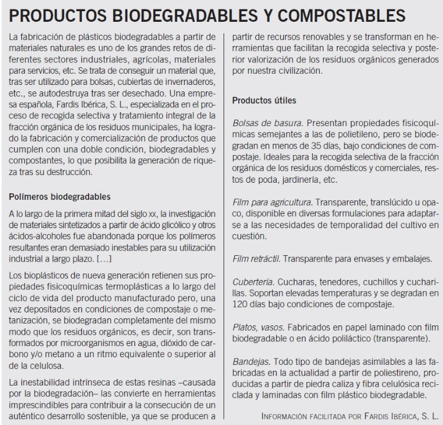

Actividad de lectura
Las sociedades avanzadas tienen que hacer frente al creciente volumen de residuos que generan. La investigación acerca de nuevos materiales persigue no solo producir materiales más baratos y con más prestaciones, sino, además, fáciles de reciclar o que sean capaces de autodestruirse sin causar perjuicios al medio ambiente.

1. Investiga los problemas ecológicos que pueden aparecer en la transformación y eliminación de plásticos convencionales.
2. ¿Crees que es posible el establecimiento de este tipo de plásticos para cualquier aplicación industrial? ¿Por qué?
3. Realiza un resúmen de un párrafo de los principales puntos de la lectura.
4. Haz una lista de las palabras que no hayas entendido, sin buscarlas en el diccionario ni usa el móvil.